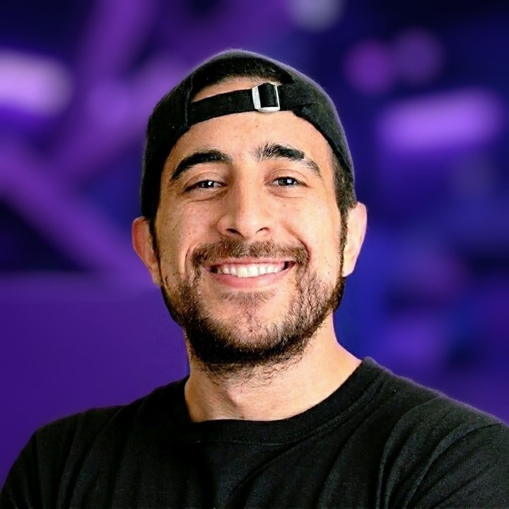
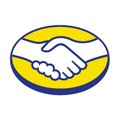
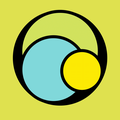

Senior Software Engineer
Criando soluções mobile de alta performance, unindo arquitetura de software, experiência do usuário e sistemas de grande escala.

Sou Senior Software Engineer no Nubank, com trajetória dedicada à engenharia mobile e sistemas de grande escala.
Nasci e cresci em São Paulo e trago uma formação multidisciplinar em Design Gráfico, Ciência da Computação e Engenharia Mobile. Iniciei minha jornada em 2017 no suporte técnico da Stone, migrando para o desenvolvimento de software e mobile. Através de passagens por Stone, PagSeguro PagBank e Mercado Livre, me especializei em pagamentos presenciais, dispositivos Smart POS e integração de SDKs.
Seja em transações, em SDKs ou em desempenho, minhas premissas são inegociáveis: segurança, estabilidade e a melhor experiência para o usuário.
Desenvolvimento Android e mobile, com Kotlin como linguagem principal.
Aplicativos para terminais Android de fabricantes como Pax, Newland, Sunmi e Gertec.
SDKs de pagamento, comunicação com dispositivos (inclusive via Bluetooth) e fluxos transacionais.
Microsserviços para terminais, modularização e otimização de desempenho.

Mercado Livre2025 – 2026
PagSeguro PagBank2021 – 2025O jeito mais direto é o e-mail. O LinkedIn também funciona.